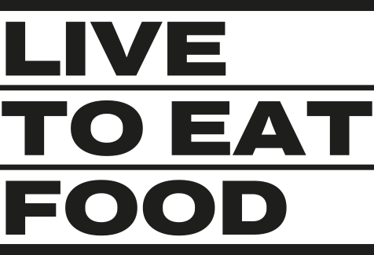
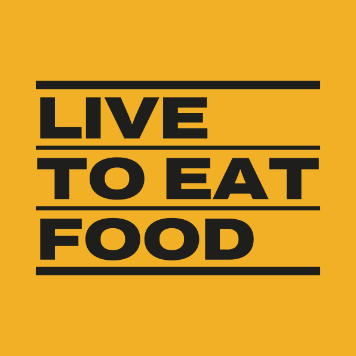

Please don't crowd the place cause I wanna go back.Tina on TikTok, May 2025
Photo: flatbread out of the oven
Wood-fired flatbread, candlepin lanes
Concept sample. Brand book for the Live to Eat Food design concept. Home Explore Place page Guide Tina Brand book
Live to Eat Food is Tina's food discovery platform for Worcester and Central Massachusetts. Every screen answers one question, where should we eat, with a real person's judgment on top and a way to get there underneath.
Restaurants can't buy Tina's opinion.The brand promise
Please don't crowd the place cause I wanna go back.Tina on TikTok, May 2025
Photo: flatbread out of the oven
Wood-fired flatbread, candlepin lanes
Worcester is a city of triple-deckers: stacked flats, painted siding, white window trim, a number by the door. The brand uses that building as its grammar, not as an illustration.
Her opinion always sits highest: the note, the verdict, the story. An ad never occupies the top floor.
Photography, dishes, what she ordered.
Address, hours, directions, menu, reserve. The thing you act on is always at street level.
| Device | What it is | Where it goes |
|---|---|---|
| Siding fields | Whole regions painted mustard, blue, green, brick or asphalt, with lapped clapboard lines | Section grounds, place modules, guide covers |
| Window trim | A trim casing (8–12px) around every photo | All photography and video stills |
| House-number plates | Condensed numerals on an asphalt plate with 3px corners | Next to every place name, map pins, guide routes |
| The street | A 16px asphalt curb places stand on, with street names below | Rows of places, route lines |
| Tina's paper | A scrap of trim paper with her marker note, rotated about -2° | One per view, top floor only |
The name stacked in three floors between a heavy cornice and foundation rule. Archivo at weight 900, width 125, outlined.



Used at page scale: one field color owns each region. Several siding colors appear together only in a row of houses.
ink-2 #4A4C45 (8.0:1 on trim). Dashed not-yet outlines: ink-3 #6B6D64.Color tells you where a place is before you read the address.
| Area | Siding |
|---|---|
| Shrewsbury Street (Restaurant Row) | mustard |
| Downtown (Franklin St, Main St) | blue |
| Canal District and Kelley Square | brick |
| Park Ave and the west side | green |
| Towns: Shrewsbury, Auburn, Holden, Grafton, Westborough, Hudson, Marlborough | faded siding |
Signage, reading and Tina's hand. Never mixed inside one element.
Where should we eat?
I want something spicy in Worcester
38 82 155
Tina pays for her meals unless we say otherwise, right on the page. Ads are labeled ads. Being listed is free, forever.
Directions · Save this place · Get Sunday's list
Our favorite Thai place in Worcester has to be Racha Thai.
Archivo:wdth,wght@62..125,100..900, Source Serif 4, Permanent Marker.Tina is the reason anyone trusts this site. Her presence is her words, her handwriting and her video. Never her generated likeness.
Please don't crowd the place cause I wanna go back.Tina on TikTok, May 2025
I'd get this again
Don't skip this
Bring friends
Worth the drive
Good, not the one
— T.
Each relationship gets one label that looks like nothing else on the page.
| Label | Means | Never |
|---|---|---|
| Tina ate here Sept 2026 | She visited, ate, and wrote the take | On a place she hasn't visited |
| Verified business | The owner confirmed the details | Read as an endorsement |
| Tina hasn't been yet | Listed, no take yet; also unclaimed pages | Paired with a marker note |
| Sponsored | A paid placement | Given Tina's hand, a top floor, or a bigger slot than the picks around it |
| Referral link | We may earn a fee if you book | Inside Tina's take |
Live examples, built from css/ltef.css.
I want in for , .
Food is the hero; the photo is a window into the room.
| Use | Ratio | Notes |
|---|---|---|
| Tina's latest find | 4:5 | Matches her Instagram feed; video stills fit without recropping |
| Place page hero | 4:3 | Dish in front, room behind |
| What Tina ordered | 1:1 | Overhead or 45°, one dish per frame |
| Guide stop | 3:2 | Wider, shows the setting |
| Video | 9:16 | Captions on, muted autoplay only in view |
| Storefront | 4:3 | Straight on, from across the street |
Tina talking to a friend who just asked where to eat: direct, specific, warm, a little bossy about the good stuff.
| Say | Not |
|---|---|
| Where should we eat? | Discover amazing restaurants |
| Show me 9 places | Search |
| Or let Tina pick for me | I'm feeling lucky |
| Save this place | Add to favorites |
| Tina hasn't been yet | Not reviewed |
| Claim your restaurant | Business login |
| Get Sunday's list | Subscribe to our newsletter |